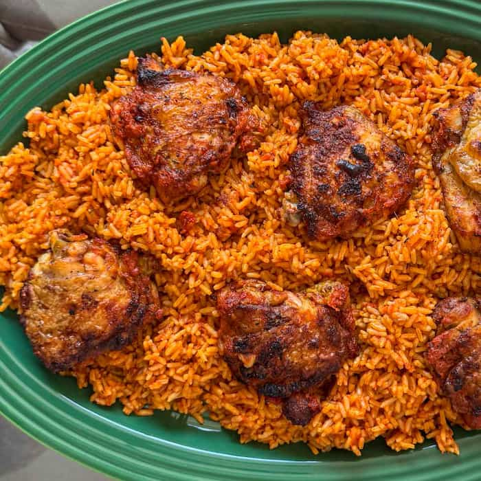
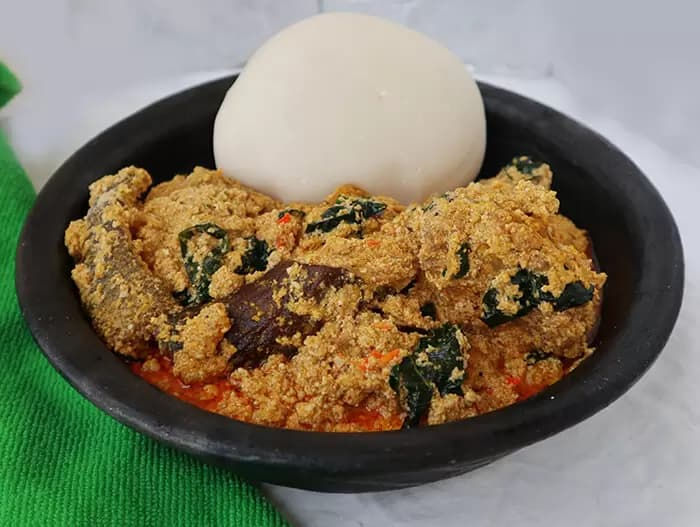
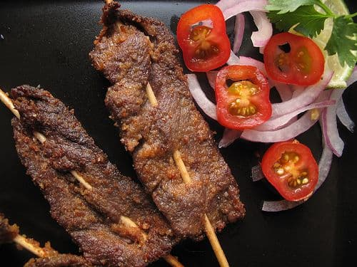

Discover the rich history and cultural significance behind Nigeria's beloved dishes.
The Jollof Rice Rivalry
Jollof rice, a vibrant, spicy dish, is a staple across West Africa, but Nigeria and Ghana famously
compete over who makes it best. Originating from the Wolof people, this dish reflects Nigeria’s love
for bold flavors and communal gatherings.

Egusi Soup: A Cultural Treasure
Egusi soup, made from melon seeds, is a beloved Igbo dish often paired with pounded yam. Its creamy
texture and nutritional value make it a symbol of hospitality in many Nigerian homes.

Suya: The Street Food King
Suya, a Hausa delicacy of spicy grilled meat, is a street food favorite. Its smoky flavor and fiery
spice blend tell a story of Northern Nigeria’s vibrant markets and culinary ingenuity.
